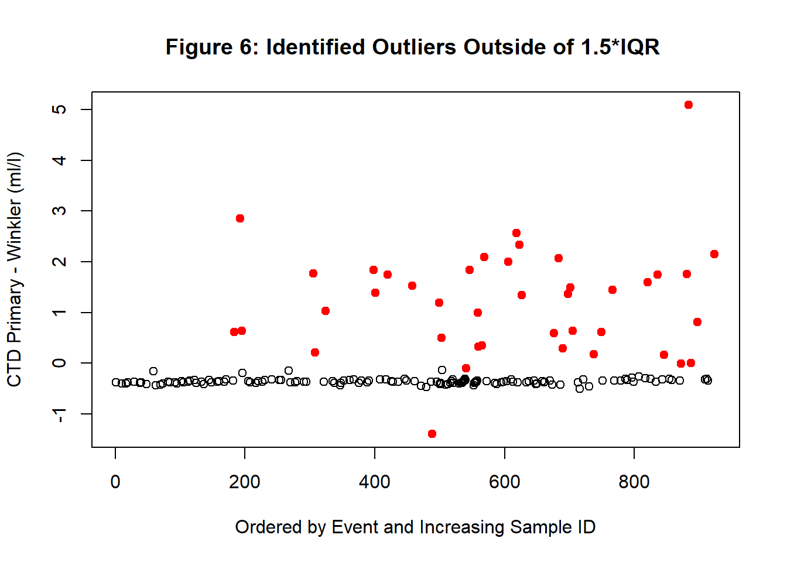

Figures ? and ? below display images generated during the CTD oxygen data correction process for mission HUD2021185. The mission’s data set was broken up into two groups because the oxygen sensors were changed part way through the mission.
The first image displays the linear correction computed for group A’s primary oxygen sensor.
Image of the before (blue circles) and after (red squares) linear correction applied to oxygen sensor data.
Note
If a secondary dissolved oxygen was used on the CTD then there would be a similar process for the secondary sensor; as was for this data set.
Plot of the primary minus secondary group A oxygen differences showing the uncorrected (black dots) and corrected (blue dots).
Calibration
This document weaves together content and executable code to document the CTD processing process. To learn more about this document, please contact Yongcun Hu.
Libraries
First step is to install and/or load required libraries:
library(dplyr)
Attaching package: 'dplyr'
The following objects are masked from 'package:stats':
filter, lag
The following objects are masked from 'package:base':
intersect, setdiff, setequal, union
library(tidyr)
Warning: package 'tidyr' was built under R version 4.3.3
library(ggplot2)
Warning: package 'ggplot2' was built under R version 4.3.3
library(utils)library(readxl)
Warning: package 'readxl' was built under R version 4.3.3
Read & Wrangle Data
This section will read all required data. This section will be modified to make it as generalized as possible.
plot(Oxy_W_diff, ylab ="Winkler Rep1 - Rep 2 (ml/l)",xlab ="Ordered by Event and Increasing Sample ID",main ="Figure 2: Outliers Outside 1.5*IQR")outliers_index =which(Oxy_W_outliers ==TRUE)new_Oxy_W_diff <-matrix(NA, length(Oxy_W_diff))new_Oxy_W_diff[outliers_index] = Oxy_W_box$outpoints(new_Oxy_W_diff, col ="red")
## subset original data removing the Winker difference outliers#df_data_filtered_W <- df_data_raw %>% .[!Oxy_W_outliers ,]## Original SOC values for the CTD oxygen sensors used during the mission # primary sensor (4136) and the secondary sensor (4140).#soc1 <- .5358soc2 <- .5714################################################################################### Compare the primary sensor (4136) with the secondary sensor (4140). ##################################################################################### filter outliers between CTD sensors#Oxy_CTD_diff <- df_data_filtered_W$Oxy_CTD_P - df_data_filtered_W$Oxy_CTD_SOxy_CTD_box <-boxplot(Oxy_CTD_diff,ylab ="Oxygen Difference (ml/l)",main =paste("Figure 3: Boxplot of CTD Oxygen Sensor Differences", "\n","Primary (4136) - Secondary (4140)"))
Oxy_CTD_outliers <- Oxy_CTD_diff %in% Oxy_CTD_box$out## plot the outliers between CTD sensors in red #####plot(Oxy_CTD_diff, ylab ="CTD Primary - Secondary (ml/l)",xlab ="Ordered by Event and Increasing Sample ID",main ="Figure 4: Outliers Outside 1.5*IQR")outliers_index =which(Oxy_CTD_outliers ==TRUE)new_Oxy_CTD_diff <-matrix(NA, length(Oxy_CTD_diff))new_Oxy_CTD_diff[outliers_index] <- Oxy_CTD_box$outpoints(new_Oxy_CTD_diff, col ="red", pch =19)
## subset the data removing the CTD difference outliers#df_data_filtered_WC <- df_data_filtered_W %>% .[!Oxy_CTD_outliers ,]## filter outliers between the CTD primary and average of Winkler replicates#primary_winkler_diff <- df_data_filtered_WC$Oxy_CTD_P - df_data_filtered_WC$winklervgprimary_winkler_diff <- primary_winkler_diff -mean(primary_winkler_diff, na.rm =TRUE)primary_winkler_box <-boxplot(primary_winkler_diff,ylab ="Oxygen Difference (ml/l)",main ="Figure 5: Boxplot of CTD Primary - Winkler Oxygen Differences")
primary_winkler_outliers <- primary_winkler_diff %in% primary_winkler_box$out## plot the outliers in red#plot(primary_winkler_diff, ylab ="CTD Primary - Winkler (ml/l)",xlab ="Ordered by Event and Increasing Sample ID",main ="Figure 6: Identified Outliers Outside of 1.5*IQR ")new_primary_winkler_diff <-matrix(NA, length(primary_winkler_diff))outliers_index <-which(primary_winkler_outliers ==TRUE)new_primary_winkler_diff[outliers_index] <- primary_winkler_box$outpoints(new_primary_winkler_diff, col ="red", pch =19)

## drop the rows that contained outliers#df_data_filtered_WCO <- df_data_filtered_WC %>% .[!primary_winkler_outliers ,]## filter outliers between CTD secondary and Winkler replicates (average)#secondary_winkler_diff <- df_data_filtered_WCO$Oxy_CTD_S - df_data_filtered_WCO$winklervgsecondary_winkler_diff <- secondary_winkler_diff -mean(secondary_winkler_diff, na.rm =TRUE)secondary_winkler_box <-boxplot(secondary_winkler_diff,ylab ="Oxygen Difference (ml/l)",main ="Figure 7: Boxplot of CTD Secondary - Winkler Oxygen Differences")
secondary_winkler_outliers <- secondary_winkler_diff %in% secondary_winkler_box$out## drop the rows that contained outliers#df_data_filtered_WCOS <- df_data_filtered_WCO %>% .[!secondary_winkler_outliers ,]## calculate new SOC for Primary CTD Oxygen#soc1_ratio <-mean(df_data_filtered_WCOS$winklervg / df_data_filtered_WCOS$Oxy_CTD_P, na.rm =TRUE)soc1_new <- soc1 * soc1_ratio## apply correction#df_data_filtered__corr <- df_data_filtered_WCOS %>% dplyr::mutate(., Oxy_CTD_P_corr = soc1_ratio * Oxy_CTD_P)## calculate new SOC for Secondary CTD Oxygen#soc2_ratio <-mean(df_data_filtered_WCOS$winklervg / df_data_filtered_WCOS$Oxy_CTD_S, na.rm =TRUE)soc2_new <- soc2*soc2_ratio## apply correction#df_data_filtered__corr <- df_data_filtered__corr %>% dplyr::mutate(., Oxy_CTD_S_corr = soc2_ratio * Oxy_CTD_S)## plot the outliers in red#plot(secondary_winkler_diff, ylab ="CTD Secondary - Winkler (ml/l)",xlab ="Ordered by Event and Increasing Sample ID",main ="Figure 8: Outliers Outside 1.5*IQR")new_secondary_winkler_diff <-matrix(NA, length(secondary_winkler_diff))outliers_index <-which(secondary_winkler_outliers ==TRUE)new_secondary_winkler_diff[outliers_index] <- secondary_winkler_box$outpoints(new_secondary_winkler_diff, col ="red", pch =19)
###################################################### Plot Primary CTD Oxygen (4136) data ######################################################## rearrange the data for plotting#df_tmp1 <- df_data_filtered__corr %>% dplyr::select(., Oxy_CTD_P, Oxy_CTD_P_corr, winklervg) %>% tidyr::gather(., key, ctd, Oxy_CTD_P, Oxy_CTD_P_corr) %>% dplyr::mutate(., key=ifelse(key =="Oxy_CTD_P", "Uncorrected", "Corrected"))## Save Group A Soc linear regression plot to a PNG file#pngFile <-"AT4802_Primary_Oxygen_LR.png"png(filename = pngFile, width =2000, height =1500, res =300)## initialize plot#p1 <-ggplot() +coord_cartesian() +scale_x_continuous(limits =c(5,10), name ="Winkler (ml/l)") +scale_y_continuous(limits =c(5,10), name ="CTD (ml/l)") +scale_shape_manual(values =c(0,1)) +scale_color_manual(values =c("red", "blue"))## plot 1:1 line#p1 <- p1 +geom_line(mapping =aes(x = x, y = y),data =data.frame(x =5:10, y =5:10),stat ="identity",position =position_identity() ) ## plot data#p1 <- p1 +geom_point(data = df_tmp1,mapping =aes(x = winklervg, y = ctd, shape = key, color = key),stat ="identity",position =position_identity(),size =2 )## Plot 9: customize plot components#p1 <- p1 +theme_bw() +ggtitle("CTD Primary Oxygen Correction") +theme(axis.text =element_text(colour ="black", angle =0, hjust =0.5, vjust =0.5, size =12),axis.title =element_text(size =14, face ="bold"),plot.title =element_text(colour ="black", face ="bold", hjust =0.5, vjust =1, size =15),legend.text =element_text(size =12),legend.position =c(.25, .75),legend.direction ="vertical",legend.key.size =unit(0.6, "cm"),legend.key.width =unit(0.5,"cm"),legend.title =element_blank(),panel.border =element_rect(colour ="black", fill =NA, size = .65),plot.margin =unit(c(0.1,0.1,0.1,0.1), "cm") )
Warning: The `size` argument of `element_rect()` is deprecated as of ggplot2 3.4.0.
ℹ Please use the `linewidth` argument instead.
Warning: A numeric `legend.position` argument in `theme()` was deprecated in ggplot2
3.5.0.
ℹ Please use the `legend.position.inside` argument of `theme()` instead.
suppressWarnings(print(p1))## Stop outputting plotting info to PNG file#dev.off()
png
2
##################################################### Plot Secondary CTD Oxygen (4140) data ####################################################### rearrange the data for plotting#df_tmp2 <- df_data_filtered__corr %>% dplyr::select(., Oxy_CTD_S, Oxy_CTD_S_corr, winklervg) %>% tidyr::gather(., key, ctd, Oxy_CTD_S, Oxy_CTD_S_corr) %>% dplyr::mutate(., key=ifelse(key =="Oxy_CTD_S", "Uncorrected", "Corrected"))## Save Group A Soc linear regression plot to a PNG file#pngFile <-"AT4802_Secondary_Oxygen_LR.png"png(filename = pngFile, width =2000, height =1500, res =300)## initialize plot#p2 <-ggplot() +coord_cartesian() +scale_x_continuous(limits =c(5,10), name ="Winkler (ml/l)") +scale_y_continuous(limits =c(5,10), name ="CTD (ml/l)") +scale_shape_manual(values =c(0,1)) +scale_color_manual(values =c("red", "blue"))## plot 1:1 line#p2 <- p2 +geom_line(mapping =aes(x = x, y = y),data =data.frame(x =5:10, y =5:10),stat ="identity",position =position_identity() ) ## plot data#p2 <- p2 +geom_point(data = df_tmp2,mapping =aes(x = winklervg, y = ctd, shape = key, color = key),stat ="identity",position =position_identity(),size =2 )## Plot #10: customize the plot components#p2 <- p2 +theme_bw() +ggtitle("CTD Secondary Oxygen Correction") +theme(axis.text =element_text(colour ="black", angle =0, hjust =0.5, vjust =0.5, size =12),axis.title =element_text(size =14, face ="bold"),plot.title =element_text(colour ="black", face ="bold", hjust =0.5, vjust =1, size =15),legend.text =element_text(size =12),legend.position =c(.25, .75),legend.direction ="vertical",legend.key.size =unit(0.6, "cm"),legend.key.width =unit(0.5,"cm"),legend.title =element_blank(),panel.border =element_rect(colour ="black", fill =NA, size = .65),plot.margin =unit(c(0.1,0.1,0.1,0.1), "cm") )suppressWarnings(print(p2))## Stop outputting plotting info to PNG file#dev.off()
png
2
################################################################################################### Plot the CTD Oxygen Differences between the two sensors before and after Correction. ##################################################################################################### Save Group A oxygen differences plot to a PNG file#pngFile <-"AT4802_Oxygen_Differences.png"png(filename = pngFile, width =2000, height =1500, res =300)## plot the CTD oxygen differences between the two sensors before and after Correction#odiff <- df_data_filtered__corr$Oxy_CTD_P - df_data_filtered__corr$Oxy_CTD_S## Plot #11#plot(odiff, col ="black", ylim =range(-0.15, 0.25),main ='Calibrated CTD Oxygen Differences',ylab ='Primary - Secondary (ml/l)',cex.main =1.5,cex.lab =1.5, cex.axis =1.25)mean_odiff <-mean(odiff, na.rm =TRUE)abline(mean_odiff, 0, col ="black")odiff_corr <- df_data_filtered__corr$Oxy_CTD_P_corr - df_data_filtered__corr$Oxy_CTD_S_corrpoints(odiff_corr, col ="blue", ylim =range(-0.15, 0.25))mean_odiff_corr <-mean(odiff_corr, na.rm =TRUE)abline(mean_odiff_corr, 0, col ="blue")mean_odiff
[1] -0.03721808
mean_odiff_corr
[1] -0.002956482
## Stop outputting plotting info to PNG file#dev.off()
png
2
## Output the final corrected data into Excel spreadsheets for the two sensor groups.#library(xlsx)
Warning: package 'xlsx' was built under R version 4.3.3